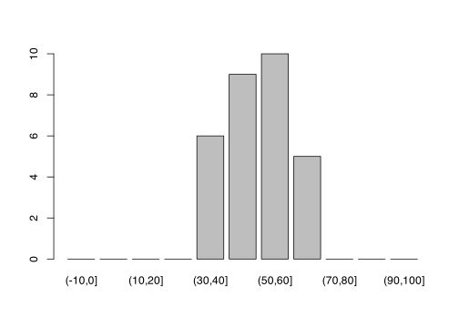

Code
#ts <- readr::read_csv("data/")Datasets containing hydrological data are most commonly, although not exclusively, in tabular (rectangular) shape. There are some data sets.
Let’s take a look at data from CAMELS (Addor et al. 2017) at https://gdex.ucar.edu/dataset/camels.html. It is a curated large sample data set, which was produced by the UCAR with the intention to
This dataset covers the same 671 catchments as the Large-Sample Hydrometeorological Dataset introduced by Newman et al. (2015). For each catchment, we characterized a wide range of attributes that influence catchment behavior and hydrological processes. Datasets characterizing these attributes have been available separately for some time, but comprehensive multivariate catchment scale assessments have so far been difficult, because these datasets typically have different spatial configurations, are stored in different archives, or use different data formats. By creating catchment scale estimates of these attributes, our aim is to simplify the assessment of their interrelationships.
Topographic characteristics (e.g. elevation and slope) were retrieved from Newman et al. (2015). Climatic indices (e.g., aridity and frequency of dry days) and hydrological signatures (e.g., mean annual discharge and baseflow index) were computed using the time series provided by Newman et al. (2015). Soil characteristics (e.g., porosity and soil depth) were characterized using the STATSGO dataset and the Pelletier et al. (2016) dataset. Vegetation characteristics (e.g. the leaf area index and the rooting depth) were inferred using MODIS data. Geological characteristics (e.g., geologic class and the subsurface porosity) were computed using the GLiM and GLHYMPS datasets.
#ts <- readr::read_csv("data/")Let’s start with processing the data, that we will use within this chapter
data_03463300 <- read.fwf(file = "./data/03463300_streamflow_qc.txt",
widths = c(8, 4, 2, 2, 8, 4),
header = FALSE)
names(data_03463300) <- c("id", "yr", "mon", "day", "discharge", "cat")
data_03463300$mon <- gsub(x = as.character(data_03463300$mon),
pattern = " ",
replacement = "0")
data_03463300$day <- gsub(x = data_03463300$day,
pattern = " ",
replacement = "0")
data_03463300$date <- paste(data_03463300$yr,
data_03463300$mon,
data_03463300$day, sep = "-")
with(data_03463300,
plot(x = , y = , type = "l",
frame.plot = FALSE))These functions are based on grouping. In hydrology, the natural groups involve - stations/basins, decades/years/months, groundwater regions, etc.
When we want
station <- read.delim("./data/6242910_Q_Day.Cmd.txt", skip = 36, header = TRUE, sep = ";", col.names = c("date", "time", "value"))
station$date <- as.Date(station$date, format = "%Y-%m-%d")
station_agg <- aggregate(station$value ~ as.factor(data.table::month(station$date)),
FUN = "quantile",
probs = c(0.1, 0.25, 0.5, 0.75, 0.9))
names(station_agg) <- c("Month", "Discharge")
par(font.main = 1,
adj = 0.1,
xaxs = "i",
yaxs = "i")
boxplot(data = station_agg,
Discharge ~ Month,
main = "Distribution of discharge in months",
frame = FALSE,
ylim = c(0,20),
xlab = "",
ylab = bquote(Discharge), font.main = 1)
par(font.main = 1,
adj = 0.1,
xaxs = "i",
yaxs = "i")
plot(quantile(rnorm(1000), probs = 1:100/100),
quantile(rnorm(1000), probs = 1:100/100), frame = FALSE, pch = 20)
abline(0, 1, col = "red")
\[ \rho_{X, Y} = \dfrac{\mathrm{cov}(X,Y)}{\sigma_X\sigma_Y} \] \[ \rho_{X,X} \]
The concept of runoff coefficient comes from the presumption, that over long-time period
\[ \varphi [-] = \dfrac{R\:[\mathrm{mm}]}{P\:[\mathrm{mm}]} \] where \(R\) represents runoff and \(P\) precipitation in long term.